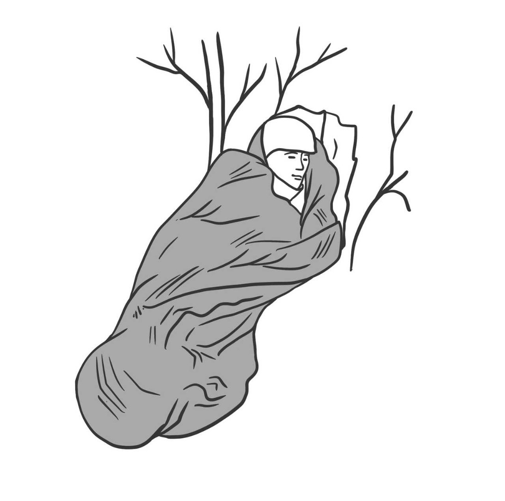

1. Знайдіть джерело кровотечі
1. Знайдіть джерело кровотечі 2. Оголіть рану таким чином, щоб ви повністю могли її бачити
3. Зробіть огляд та визначте «кровотечу, що загрожує життю»
КЛЮЧОВІ ПОЛОЖЕННЯ: Існує багато способів зупинки кровотечі, проте вони всі мають одну спільну особливість - стискання кровоносних судин зупиняє кровотечу.

 При кровотечі з кінцівки, що загрожує життю, і у випадку доступності турнікета:
При кровотечі з кінцівки, що загрожує життю, і у випадку доступності турнікета:
1. Затягніть турнікет навколо кінцівки з кровотечою 5-8 см вище поранення (переконайтеся, що турнікет розташовано НЕ на суглобі - за необхідності – розмістити вище суглоба)
2. Потягніть за липку стрічку турнікета якомога сильніше та зафіксуйте вільний кінець
3. Закрутіть вороток до зупинки кровотечі
4. Зафіксуйте вороток
5. Запишіть час

 Якщо вам доступна аптечка першої допомоги: При кровотечі з кінцівки, що загрожує життю, і у випадку НЕ доступності турнікета АБО При кровотечі, що загрожує життю, в області шиї, плеч або паху:
Тампонуйте (заповніть) рану кровоспинною марлею (т.зв. гемостатиком), звичайною марлею, або чистою тканиною, після чого здійсніть тиск обома руками.
Якщо вам доступна аптечка першої допомоги: При кровотечі з кінцівки, що загрожує життю, і у випадку НЕ доступності турнікета АБО При кровотечі, що загрожує життю, в області шиї, плеч або паху:
Тампонуйте (заповніть) рану кровоспинною марлею (т.зв. гемостатиком), звичайною марлею, або чистою тканиною, після чого здійсніть тиск обома руками.
1. Відкрийте одяг навколо рани.
2. Видаліть надлишки згустків крові.
3. Тампонуйте рану гемостатиком (бажано), звичайною марлею, або чистою тканиною.
4. Одразу здійсніть прямий тиск на рану обома руками.
5. Натискайте якомога сильніше. 6. Утримуйте тиск до прибуття медиків.
Є турнікет
1. Затягніть турнікет навколо кінцівки з кровотечою 5-8 см вище поранення (переконайтеся, що турнікет розташовано НЕ на суглобі - за необхідності – розмістити вище суглоба)
2. Потягніть за липку стрічку турнікета якомога сильніше та зафіксуйте вільний кінець
3. Закрутіть вороток до зупинки кровотечі
4. Зафіксуйте вороток
5. Запишіть час
Нема турнікету або поранення шиї, паху або плеч
1. Відкрийте одяг навколо рани.
2. Видаліть надлишки згустків крові.
3. Тампонуйте рану гемостатиком (бажано), звичайною марлею, або чистою тканиною.
4. Одразу здійсніть прямий тиск на рану обома руками.
5. Натискайте якомога сильніше. 6. Утримуйте тиск до прибуття медиків.
Зупинка кровотечі немає аптечки

 Затромбуйте рану чистою тканиною і застосуйте тиск.
Затромбуйте рану чистою тканиною і застосуйте тиск.
Прямий тиск на рану.
1. Візьміть будьяку чисту тканину (напр., сорочку) і закрийте рану
2. Якщо рана велика і глибока, спробуйте “заповнити” рану тканиною (затромбуйте рану тканиною)
3. Застосуйте прямий тиск обома руками безпосередньо на рану, що є джерелом кровотечі
4. Натискайте якомога сильніше вагою Всього тіла
5. Утримуйте тиск до прибуття медиків, або поки це безпечно для життя того хто рятує
Прямий тиск на рану.
1. Візьміть будьяку чисту тканину (напр., сорочку) і закрийте рану
2. Якщо рана велика і глибока, спробуйте “заповнити” рану тканиною (затромбуйте рану тканиною)
3. Застосуйте прямий тиск обома руками безпосередньо на рану, що є джерелом кровотечі
4. Натискайте якомога сильніше вагою Всього тіла
5. Утримуйте тиск до прибуття медиків, або поки це безпечно для життя того хто рятує
Що таке кровотеча, яка загрожує життю?


1. Кров, що виприскує з рани під тиском.
2. Кров, що постійно витікає з рани. 3. Калюжа крові, яка швидко збільшується.
4. Одяг, просочений кров'ю або пов'язка, просочена кров'ю.
5. Часткова або повна ампутація.
6. Поранений без свідомості або в сплутаному стані.
1. Кров, що виприскує з рани під тиском.
2. Кров, що постійно витікає з рани. 3. Калюжа крові, яка швидко збільшується.
4. Одяг, просочений кров'ю або пов'язка, просочена кров'ю.
5. Часткова або повна ампутація.
6. Поранений без свідомості або в сплутаному стані.
Оцінка загрози для рятувальника
Погляд із укриття. У разі продовження
повітряної тривоги треба залишатися в
укритті (можливі повторні прильоти). Якщо ви бачите поранених і не можете до них дістатися - надайте їм дистанційні поради по самодопомозі (притиснення травмованої ділянки,
накладання турнікету та рух в укриття). За відсутності повітряної тривоги
І зовнішніх загроз, підходьте до постраждалого повільно, оцінюючи ситуацію.

Обов'язкові засоби особистої безпеки
Ви маєте:
1. Вдягти рукавички, тому що потенційно ви будете контактувати з біологічними рідинами (слиною, вмістом шлунку, кров'ю).
2. За можливості, вдягайте захисні окуляри (очі є дуже вразливою зоною за наявності розбризкування біологічних рідин). При потраплянні їх на неушкоджену шкіру ризик зараження мінімальний. Важливо одразу після завершення допомоги вимити руки з милом.
Обов'язкові засоби особистої безпеки
Ви маєте:
1. Вдягти рукавички, тому що потенційно ви будете контактувати з біологічними рідинами (слиною, вмістом шлунку, кров'ю).
2. За можливості, вдягайте захисні окуляри (очі є дуже вразливою зоною за наявності розбризкування біологічних рідин). При потраплянні їх на неушкоджену шкіру ризик зараження мінімальний. Важливо одразу після завершення допомоги вимити руки з милом.
Бажано підходити з боку ніг (для запобігання високоамплітудних рухів головою та шиєю з боку постраждалого).
Якщо ви бачите кров, спочатку зупиніть
кровотечу прямим тиском, джгутом
(турнікетом) або затампонуйте рану.
Детально в розділі Stop The Bleed та/або зупинка кровотеч в ТССС ДОДАТИ ПОСИЛАННЯ НА РОЗДІЛИ В ЗАСТОСУНКУ
У разі відсутності кровотечі або після її зупинки оцінити стан свідомості:
1. Запитати: "Як справи?" або "Що трапилося?"
2. За відсутності відповіді, стати на одне коліно поруч, інше залишити піднятим заради захисту себе від можливого підйому руки постраждалого. Одну з рук тримати напоготові для захисту від другої руки постраждалого. Натиснути трьома пальцями під ключицю постраждало та порухати з боку в бік, перевіряючи наявність реакції на ваші дії.
Детально в розділі Stop The Bleed та/або зупинка кровотеч в ТССС ДОДАТИ ПОСИЛАННЯ НА РОЗДІЛИ В ЗАСТОСУНКУ
У разі відсутності кровотечі або після її зупинки оцінити стан свідомості:
1. Запитати: "Як справи?" або "Що трапилося?"
2. За відсутності відповіді, стати на одне коліно поруч, інше залишити піднятим заради захисту себе від можливого підйому руки постраждалого. Одну з рук тримати напоготові для захисту від другої руки постраждалого. Натиснути трьома пальцями під ключицю постраждало та порухати з боку в бік, перевіряючи наявність реакції на ваші дії.
1. Короткочасна втрата свідомості (непритомність/колапс).
2. Тривала втрата свідомості (кома), зі збереженою роботою серця.
3. Свідомість відсутня + відсутнє дихання (зупинка серця).
2. Тривала втрата свідомості (кома), зі збереженою роботою серця.
3. Свідомість відсутня + відсутнє дихання (зупинка серця).
Близько 70% людей протягом життя переживали короткочасну втрату свідомості. Основними причинами цього стану є:
1. Біль.
2. Виснаження.
3. Емоційний стрес (медичні маніпуляції).
4. Перегрів.
5. Перехід з тривалого лежачого стану у вертикальний або сидячий.
6. Гіпервентиляція.
Механізм розвитку колапсу
Преважаюча причина розвитку колапсу - збіднілий кровотік мозку або низький рівень глюкози крові, чи поєднання цих двох причин.
1. Біль.
2. Виснаження.
3. Емоційний стрес (медичні маніпуляції).
4. Перегрів.
5. Перехід з тривалого лежачого стану у вертикальний або сидячий.
6. Гіпервентиляція.
Механізм розвитку колапсу
Преважаюча причина розвитку колапсу - збіднілий кровотік мозку або низький рівень глюкози крові, чи поєднання цих двох причин.
Людина впала у вас на очах:
1. Забезпечте власну безпеку
2. Покладіть її горизонтально. 3. Підніміть ноги під кутом приблизно 45°. Тримайте 10-15 секунд.
4. Якщо людина почала приходити до тями, посадіть і спробуйте вплинути на причину та наслідки непритомності (дайте солодкий напій, прохолодний при підозрі на перегрів, вімкніть кондиціонер тощо).
5. Якщо ефекту від підйому ніг немає протягом 15-20 секунд, викличте швидку та переходьте до дій перевірки дихальних шляхів.
1. Забезпечте власну безпеку
2. Покладіть її горизонтально. 3. Підніміть ноги під кутом приблизно 45°. Тримайте 10-15 секунд.
4. Якщо людина почала приходити до тями, посадіть і спробуйте вплинути на причину та наслідки непритомності (дайте солодкий напій, прохолодний при підозрі на перегрів, вімкніть кондиціонер тощо).
5. Якщо ефекту від підйому ніг немає протягом 15-20 секунд, викличте швидку та переходьте до дій перевірки дихальних шляхів.
Якщо підйом ніг неефективний чи людина тривалий час без свідомості, Вам необхідно викликати швидку самостійно або залучивши помічника.
Звернення по допомогу має бути
адресним або самостійним!
Щоб обрати помічника, адресно зверніться до обраної людини, вказавши на неї рукою.
Наприклад: "Пані/пане, ви можете мені допомогти?"
Якщо людина погодилась дайте їй чітку інструкцію зателефонувати 103/112 та викликати швидку.
Щоб обрати помічника, адресно зверніться до обраної людини, вказавши на неї рукою.
Наприклад: "Пані/пане, ви можете мені допомогти?"
Якщо людина погодилась дайте їй чітку інструкцію зателефонувати 103/112 та викликати швидку.
Перевірте дихання.
1. Відкрийте ротову порожнину й огляньте на наявність сторонніх тіл (залишки їжі, жувальна гумка, зйомні зубні протези та інше).
2. Якщо є, то витягніть стороннє тіло.
3. Знайдіть кути нижньої щелепи з обох боків (кісточка, що йде до вуха та підборіддя).
4. Висуньте щелепу вверх та відкрийте рота, натиснувши на підборіддя.
5. Дивіться на живіт та грудну клітку протягом 10 секунд та рахуйте дихання.
Якщо дихання в нормі, ви побачите 2-5 дихальні рухи.
Якщо людина дихає - поверніть її на бік. Якщо не дихає, починайте виконувати СЛР.
1. Відкрийте ротову порожнину й огляньте на наявність сторонніх тіл (залишки їжі, жувальна гумка, зйомні зубні протези та інше).
2. Якщо є, то витягніть стороннє тіло.
3. Знайдіть кути нижньої щелепи з обох боків (кісточка, що йде до вуха та підборіддя).
4. Висуньте щелепу вверх та відкрийте рота, натиснувши на підборіддя.
5. Дивіться на живіт та грудну клітку протягом 10 секунд та рахуйте дихання.
Якщо дихання в нормі, ви побачите 2-5 дихальні рухи.
Якщо людина дихає - поверніть її на бік. Якщо не дихає, починайте виконувати СЛР.
При відсутності свідомості та обов'язково наявності дихання покладіть постраждалого в стабільне бічне положення за методом HAIENS.
Метод HАIENS
Дальню руку постраждалого підніміть вверх.
Ближню руку покладіть долонею на протилежну пахву.
Ближню до вас ногу зігніть в коліні та поставте на стопу, тримайте за коліно.
Вільною рукою зафіксуйте потиличну частину голови та шию.
Штовхайте зігнуту ногу (вона працює як важіль), повертайте людину на бік, при цьому надійно фіксуйте голову і шию.
Покладіть голову на підняту та випрямлену руку, натисніть на підборіддя і відкрийте рота.
Верхню ногу покладіть під кутом 90° до тіла.
Долоню витягніть з під пахви.
Слідкуйте за диханням до приїзду швидкої.


Метод HАIENS
Дальню руку постраждалого підніміть вверх.
Ближню руку покладіть долонею на протилежну пахву.
Ближню до вас ногу зігніть в коліні та поставте на стопу, тримайте за коліно.
Вільною рукою зафіксуйте потиличну частину голови та шию.
Штовхайте зігнуту ногу (вона працює як важіль), повертайте людину на бік, при цьому надійно фіксуйте голову і шию.
Покладіть голову на підняту та випрямлену руку, натисніть на підборіддя і відкрийте рота.
Верхню ногу покладіть під кутом 90° до тіла.
Долоню витягніть з під пахви.
Слідкуйте за диханням до приїзду швидкої.
1. Раптове порушення серцевого ритму (мова про два найгірші варіанти, описані нижче).
2. Недостатнє кровопостачання серцевого м'яза - міокарда (стенокардія, інфаркт міокарда). Пояснення про елементарні механізми гемодинаміки на прикладі піднятих рук, зменшення кровотоку під дією гравітації, та приклад з навантаженням на литкові м'язи при частих відриваннях п'яток від підлоги (моделювання навантаження зі збільшенням потреби у кисні). В обох випадках виникають больові відчуття, котрі пояснюються недостатнім кровотоком у м'язах, що є зрозумілою ілюстрацією механізму дефіциту кровопостачання серцевого м'язу.
3. Недостатність насосної функції серця (ураження коронавірусом, стрептококом). Частину м'язової тканини "з'їдає" вірус або бактерія, і цю ділянку заміщає фіброзна тканина, котра не має здатності до скрочення. Таке серце збільшується в розмірі, погано прокачує кров, з'являються ознаки серцевої недостатності, що в важких випадках може призвести до його зупинки.
4. "Спортивне серце" - здорові коронарні судини, але навантаження перевищує можливості, виникає дисонанс між потребою у кисні та швидкістю його доставки. Футбол класичний приклад асиметричних, сверхінтенсивних навантажень в короткий проміжок часу, що регулярно призводить молодих, здорових атлетів до зупинки серця під час матчів.
Фібриляція шлуночків 75-90% випадків. Фібриляція (fibrillatio) - з латині перекладається як "миготіння, посмикування". Збій у системі проведення електричного імпульсу з синусового вузлу (в правій верхній частині серця). Більшість структурних одиниць серцевого м'язу - жива, як армія без командування, кожне серцеве волокно рухається в своєму ритмі, десінхронізовано, серцевий викид в такій ситуації дорівнює нолю. На ЕКГ (правий малюнок) це має вигляд "осциляцій" - зигзагоподібних ліній, на початку - високоамплітудних, за відсутності ефективних дій амплітуда буде знижуватися, аж до поки зигзаги не вирівняються в пряму лінію - асистолію.
Асистолія 5-10% випадків. Це фінальний стан нерухомості і електричної неактивності структурних м'язових одиниць серця. Вірогідність оживлення і поновлення роботи серця в такому випадку дуже низька.
Асистолія 5-10% випадків. Це фінальний стан нерухомості і електричної неактивності структурних м'язових одиниць серця. Вірогідність оживлення і поновлення роботи серця в такому випадку дуже низька.
У крові немає запасів кисню, тому мозок майже миттєво відчує його нестачу.

1. Клінічна.
2. Соціальна.
3. Смерть мозоку.
4. Біологічна.
У разі зупинки серця стадія клінічної смерті буде тривати від 3 до 6 хвилин, потім вона зміниться стадією загибелі кори і, невдовзі, всього мозоку. Приблизно з 20-ї хвилини від зупинки серцевої діяльності почнуть з'являтися ознаки біологічної смерті, котрі вже чітко будуть помітні за 40 хвилин від зупинки кровообігу.

У разі успішних дій в перші декілька хвилин (серцева діяльність відновлена) людина повертається в свій базовий стан (такою як була: відновлюється дихання, повертається свідомість, немає ознак неврологічного дефіциту).
Якщо серце запрацювало через 10 хвилин після зупинки, більшу частину цього часу кровообігу мозоку не було, або він був недостатнім чи страждало насичення крові киснем, чи комбінація першого та другого - результатом може бути відновлення дихання, свідомості, але можуть бути присутні неврологічні зміни на кшталт постінсультних. Ці зміни можуть бути тимчасовими або постійними в залежності від масштабу ураження мозоку. Відсутність кровотоку мозоку протягом 15 хвилин з наступним відновленням роботи серця дуже вірогідно призведе до загибелі кори мозоку та переходу у вегетативний стан.
Відновлення роботи серця після 20 хвилин відсутності кровотоку, статистично дуже маловірогідно: починаються незворотні процеси, притаманні стадії біологічної смерті.

Якщо людина не дихає, її серце не працює. Розпочніть серцево-легеневу реанімацію.
Важливо! Тренування серцево-легеневій реанімації виконується лише на манекенах.
Важливо! Тренування серцево-легеневій реанімації виконується лише на манекенах.
Важливо! Тренування сердево-легеневій реанімації виконується лише на манекенах.
Виконуйте СЛР за наступними правилами:
1) Точки тиску межа середньої та нижньої третин груднини.
2) Оптимальне положення рук - "замок" (пальці нижньої руки паралельно ребрам і не торкаються постраждалого).
3) Швидкість натискань 100-120 на хвилину.
4) Глибина натискань 5-6 см.
Виконуйте СЛР за наступними правилами:
1) Точки тиску межа середньої та нижньої третин груднини.
2) Оптимальне положення рук - "замок" (пальці нижньої руки паралельно ребрам і не торкаються постраждалого).
3) Швидкість натискань 100-120 на хвилину.
4) Глибина натискань 5-6 см.
Важливо! Тренування серцево-легеневій реанімації виконується лише на
манекенах.
Покладіть два пальці на нижній край грудини, перпендикулярно їй.
Основу іншої долоні поставте вздовж грудини, відразу поряд з пальцями.
Замкніть руки в замок.
Покладіть два пальці на нижній край грудини, перпендикулярно їй.
Основу іншої долоні поставте вздовж грудини, відразу поряд з пальцями.
Замкніть руки в замок.
Важливо! Тренування серцево-легеневій реанімації виконується лише на манекенах.
Зона щільного контакту долоні з поверхнею грудної клітки доволі мала. Основа долоні має лежати вздовж грудини.
Зона щільного контакту долоні з поверхнею грудної клітки доволі мала. Основа долоні має лежати вздовж грудини.
Механізм дії при непрямому масажі серця.
З кожним натисканням, серце постраждалого буде стискатись між грудиною та хребтом.
Це забезпечить штучну підтримку кровообігу та кровопостачання головного мозку.
Це забезпечить штучну підтримку кровообігу та кровопостачання головного мозку.
Правильна поза рятувальника - запорука ефективного масажу серця.
Руки рятувальника розігнуті в ліктях. Плечі над руками, тиснемо на грудну клітку всією вагою свого тіла.
Коліна рятувальника біля тіла постраждалого.
Руки рятувальника розігнуті в ліктях. Плечі над руками, тиснемо на грудну клітку всією вагою свого тіла.
Коліна рятувальника біля тіла постраждалого.
Продовжуйте СЛР:
1. До приїзду швидкої.
2. До відновлення самостійного дихання.
3. Допоки у вас вистачає сил.
1. До приїзду швидкої.
2. До відновлення самостійного дихання.
3. Допоки у вас вистачає сил.
Використайте автоматичний зовнішній дефібрилятор (АЗД), якщо він є в доступі
АЗД, розміщені в громадських місцях, позначають серцем, хрестиком та блискавкою на зеленому тлі.
Попросіть помічника принести дефібрилятор якнайшвидше, проводьте непрямий масаж серця весь цей час.
Увімкніть дефібрилятор. Слухайте та виконуйте голосові команди. Натисніть кнопку '"'"розряд"" за командою. Продовжуйте непрямий масаж серця.
АЗД, розміщені в громадських місцях, позначають серцем, хрестиком та блискавкою на зеленому тлі.
Попросіть помічника принести дефібрилятор якнайшвидше, проводьте непрямий масаж серця весь цей час.
Увімкніть дефібрилятор. Слухайте та виконуйте голосові команди. Натисніть кнопку '"'"розряд"" за командою. Продовжуйте непрямий масаж серця.
Обов'язково виконайте правильне розташування електродів на поверхні тіла постраждалої людини
Накладіть електроди на ОГОЛЕНУ грудну клітку постраждалого, як показано на схемі.
Накладіть електроди на ОГОЛЕНУ грудну клітку постраждалого, як показано на схемі.
Застосувати турнікети для кінцівок з метою зупинки кровотечі в місцях, які доступні для їх використання (плече, стегно);
*Плече - частина руки від ліктя до плечового суглоба. Турнікет завжди накладають вище поранення та не на суглоб. Якщо тактична ситуація дозволяє - огляньте швидко інші кінцівки на предмет кровотечі в зоні під вогнем.
Накладіть турнікет на кінцівку.
Під час обстрілу накладіть турнікет:
- поверх одягу;
- максимально високо;
- максимально щільно (поки крутиться
Вороток);
- перпендикулярно вісі кінцівки;
- на порожню кишеню.
Турнікет завжди накладають вище поранення та не на суглоб.
Перемістіть постраждалого в укриття.
*Плече - частина руки від ліктя до плечового суглоба. Турнікет завжди накладають вище поранення та не на суглоб. Якщо тактична ситуація дозволяє - огляньте швидко інші кінцівки на предмет кровотечі в зоні під вогнем.
Накладіть турнікет на кінцівку.
Під час обстрілу накладіть турнікет:
- поверх одягу;
- максимально високо;
- максимально щільно (поки крутиться
Вороток);
- перпендикулярно вісі кінцівки;
- на порожню кишеню.
Турнікет завжди накладають вище поранення та не на суглоб.
Перемістіть постраждалого в укриття.
Дії припустимі тільки в зоні тактичного укриття (не під обстрілом).
Одразу проконтролюйте накладення первинного турнікету.
Якщо він накладений незадовільно одразу накладіть другий поруч (вище первинного).
Проведіть огляд кінцівок (якщо не було проведено), зон можливих вузлових кровотеч (промежина, пах, пахви, шия).
Якщо місце кровотечі доступне для використання турнікета, негайно накладіть його.
Турнікет накладайте для зупинки кровотечі з ран, які анатомічно підходять для його накладання, або при будь-якій травматичній ампутації.
Турнікет накладайте прямо на одяг людини на 5-8 см (4-5 пальців) вище місця кровотечі.
Позначте на турнікеті час його накладання.
— Якщо поранення на кінцівці знаходиться поряд з суглобом, турнікет треба накладати вище суглоба. При виявленні вузлової кровотечі одразу тампонуйте рану (раньовий канал), тримайте тиск після тампонади не менше 3 хвилин, після —- накладайте давлячу пов'язку.
- Якщо поранення знаходяться біля кистей рук або ступень, турнікет накладають на 4-5 пальців вище поранення.
- Якщо кровотеча не зупинилася після накладання першого турнікета, накладіть другий турнікет безпосередньо поряд та вище першого.
- При зовнішній кровотечі, яку не можна зупинити накладанням турнікета для кінцівок через анатомічні особливості, використовуйте тампонаду рани з наступним 3-хвилинним натисканням та давлячою пов'язкою.
або звичайний бинт для тампонади рани та прямий тиск на рану.

- Чепець це пов'язка на голову для зупинки кровотечі з частини голови з волоссям.
Гемостатичні марлі необхідно використовувати з подальшим прямим тиском на рану не менше 3 хвилин.
Одразу проконтролюйте накладення первинного турнікету.
Якщо він накладений незадовільно одразу накладіть другий поруч (вище первинного).
Проведіть огляд кінцівок (якщо не було проведено), зон можливих вузлових кровотеч (промежина, пах, пахви, шия).
Якщо місце кровотечі доступне для використання турнікета, негайно накладіть його.
Турнікет накладайте для зупинки кровотечі з ран, які анатомічно підходять для його накладання, або при будь-якій травматичній ампутації.
Турнікет накладайте прямо на одяг людини на 5-8 см (4-5 пальців) вище місця кровотечі.
Позначте на турнікеті час його накладання.
— Якщо поранення на кінцівці знаходиться поряд з суглобом, турнікет треба накладати вище суглоба. При виявленні вузлової кровотечі одразу тампонуйте рану (раньовий канал), тримайте тиск після тампонади не менше 3 хвилин, після —- накладайте давлячу пов'язку.
- Якщо поранення знаходяться біля кистей рук або ступень, турнікет накладають на 4-5 пальців вище поранення.
- Якщо кровотеча не зупинилася після накладання першого турнікета, накладіть другий турнікет безпосередньо поряд та вище першого.
- При зовнішній кровотечі, яку не можна зупинити накладанням турнікета для кінцівок через анатомічні особливості, використовуйте тампонаду рани з наступним 3-хвилинним натисканням та давлячою пов'язкою.
або звичайний бинт для тампонади рани та прямий тиск на рану.
- Чепець це пов'язка на голову для зупинки кровотечі з частини голови з волоссям.
Гемостатичні марлі необхідно використовувати з подальшим прямим тиском на рану не менше 3 хвилин.
Огляд на наявність вузлової кровотечі або кровотечі з кінцівок є однією з необхідних практичних навичок, якою
має володіти рятувальник. Ціль — знайти ще невиявлені кровотечі у разі наявності для зупинки крововтрат.
Методика швидкого огляду на кровотечу полягає в перевірке всіх зон імовірних вузлових кровотеч та кінцівок, починаючі з шиї і до стоп.
Руки рятувальника в захисних рукавичках рухаються по шкірі та одежі із постійною візуальною оцінкою наявності крові на долонях.
Виконуйте поступове зміщення згори вниз з контролем наявності крові на рукавичках через кожні 10-15 см у наступному порядку: шия, пахви, плечі, передпліччя, кисті рук, промежина, пах, сідниці, стегна, гомілки, стопи.
Огляд швидкий, займає менше 1 хвилини. Виконується в зоні тактичного укриття після зупинки наявних кровотеч.
Методика швидкого огляду на кровотечу полягає в перевірке всіх зон імовірних вузлових кровотеч та кінцівок, починаючі з шиї і до стоп.
Руки рятувальника в захисних рукавичках рухаються по шкірі та одежі із постійною візуальною оцінкою наявності крові на долонях.
Виконуйте поступове зміщення згори вниз з контролем наявності крові на рукавичках через кожні 10-15 см у наступному порядку: шия, пахви, плечі, передпліччя, кисті рук, промежина, пах, сідниці, стегна, гомілки, стопи.
Огляд швидкий, займає менше 1 хвилини. Виконується в зоні тактичного укриття після зупинки наявних кровотеч.
Не потребує проведення додаткових заходів.
Поранений без свідомості та дихає
1. Перевірити ротову порожнину, обережно відкрити та витягнути сторонні тіла.
2. Провести прийом відкриття дихальних шляхів.
3. Висунути нижню щелепу та відкрити рот – оцінити наявність ритмічного дихання.
4. Далі відкрити дихальні шляхи одним зі способів:
або покласти пораненого набік наступним чином: 5. Якщо при втраті свідомості пораненого ви побачили витікання шлуночного вмісту з роту негайно (за методикою) повертайте його в бічне положення.
6. При зупинці дихання пораненого негайно покличте медика або бійця рівня CLЅ.
1. Перевірити ротову порожнину, обережно відкрити та витягнути сторонні тіла.
2. Провести прийом відкриття дихальних шляхів.
3. Висунути нижню щелепу та відкрити рот – оцінити наявність ритмічного дихання.
4. Далі відкрити дихальні шляхи одним зі способів:
або покласти пораненого набік наступним чином: 5. Якщо при втраті свідомості пораненого ви побачили витікання шлуночного вмісту з роту негайно (за методикою) повертайте його в бічне положення.
6. При зупинці дихання пораненого негайно покличте медика або бійця рівня CLЅ.
Дозвольте пораненому зайняти будь-яке положення, при якому найкраще зберігається прохідність дихальних шляхів: у тому числі сидячи, та/або нахилившись вперед.
Якщо це положення на спині або на боці:
1. Виконайте прийом відкриття дихальних шляхів підніміть підборіддя, висуваючи нижню щелепу та відкрив рот.
2. Для дренування шлункового вмісту з роту поверніть постраждалого набік і залиште так, допоки він без свідомості. Положення на спині тільки для поранених у свідомості.
3. Якщо свідомість відсутня, але ритмічне дихання збережене - залиште пораненого у стабільному боковому положенні.
4. При зупинці дихання пораненого негайно покличте медика або бійця рівня CLS
Стабілізацію шийного відділу хребта можна не проводити у постраждалих з наявністю лише проникаючих поранень.
Додаткова інформація
При наявності проникаючого поранення грудної клітки, ознак забою грудної клітки з поверхневим та частим диханням вище 20 вдихів за хвилину, з погіршенням стану в динаміці - терміново кличте бойового рятувальника або медика для виконання невідкладних дій по відношенню до можливого напруженного пневмотораксу.
Такі рани не тампонувати.
При наявності проникаючого поранення грудної клітки, ознак забою грудної клітки з поверхневим та частим диханням вище 20 вдихів за хвилину, з погіршенням стану в динаміці - терміново кличте бойового рятувальника або медика для виконання невідкладних дій по відношенню до можливого напруженного пневмотораксу.
Такі рани не тампонувати.
Летальні поранення через кровотечу поділяються на:
- Поранення рук і ніг;
- Травми грудної клітки, живота і тазу;
- Вузлові кровотечі.
1. Поранення рук і ніг (кінцівок) Кровотеча через травму є причиною смерті №1. Кровотеча контролюється накладанням прямого тиску або турнікетом. Джгут використовується, якщо немає турнікету.
2. Травми грудної клітки, живота і тазу
Такі травми викликають внутрішню кровотечу.
Цю кровотечу можна зупинити виключно в лікарні / шпиталі. Цим постраждалим потрібна негайна допомога медиків. Комунікуйте з медиками про негайну допомогу саме цим пораненим.
У випадках підозри на перелом кісток тазу необхідно накласти тазовий бандаж.
Перелом кісток тазу може статись при важкій тупій або вибуховій травмі, при якій виявляється щось з перерахованого:
— Біль в ділянці тазу;
— Будь-яка повна або часткова ампутація нижньої кінцівки;
— При обстеженні виникає підозра на перелом кісток тазу;
— Постраждалий без свідомості;
— Важкий шок.
Замість приладдя на малюнках можна Використовувати широкий пояс, або два пояси для фіксації кісток тазу.
3. Точки натиску для тимчасової зупинки вузлових кровотеч
1. Чітко позначте на всіх турнікетах ЧАС накладання.
2. Позначте, які турнікети було застосовано та час їх накладання в карточці пораненого.
3. Позначте час у випадку повторного накладання.
4. Час використання турнікетів та час, коли вони були зняті, теж запишіть у карточці пораненого.
Використовуйте незмивний маркер.
- Поранення рук і ніг;
- Травми грудної клітки, живота і тазу;
- Вузлові кровотечі.
1. Поранення рук і ніг (кінцівок) Кровотеча через травму є причиною смерті №1. Кровотеча контролюється накладанням прямого тиску або турнікетом. Джгут використовується, якщо немає турнікету.
2. Травми грудної клітки, живота і тазу
Такі травми викликають внутрішню кровотечу.
Цю кровотечу можна зупинити виключно в лікарні / шпиталі. Цим постраждалим потрібна негайна допомога медиків. Комунікуйте з медиками про негайну допомогу саме цим пораненим.
У випадках підозри на перелом кісток тазу необхідно накласти тазовий бандаж.
Перелом кісток тазу може статись при важкій тупій або вибуховій травмі, при якій виявляється щось з перерахованого:
— Біль в ділянці тазу;
— Будь-яка повна або часткова ампутація нижньої кінцівки;
— При обстеженні виникає підозра на перелом кісток тазу;
— Постраждалий без свідомості;
— Важкий шок.
Замість приладдя на малюнках можна Використовувати широкий пояс, або два пояси для фіксації кісток тазу.
3. Точки натиску для тимчасової зупинки вузлових кровотеч
Перегляньте попередньо застосований турнікет;
Зробіть огляд рани і вирішіть, чи турнікет потрібен;
Якщо турнікет потрібнен, замініть його іншим, наклавши його безпосередньо на шкіру на 5-8 см вище місця кровотечі;
Впевніться, що кровотеча зупинилась. Якщо немає травматичної ампутації, периферичний пульс має бути перевірений;
Якщо кровотеча триває, або дистальний (нижче турнікету) пульс ще присутній, розгляньте додаткове закручування турнікета або використайте другий турнікет, розмістивши його безпосередньо поряд з першим, з метою як зупинки кровотечі, так і усунення пульсу нижче зони накладання;
Якщо під час переоцінки виявлено, що первинно накладений турнікет непотрібен, зняти турнікет та позначити час, коли він був знятий.
Зробіть огляд рани і вирішіть, чи турнікет потрібен;
Якщо турнікет потрібнен, замініть його іншим, наклавши його безпосередньо на шкіру на 5-8 см вище місця кровотечі;
Впевніться, що кровотеча зупинилась. Якщо немає травматичної ампутації, периферичний пульс має бути перевірений;
Якщо кровотеча триває, або дистальний (нижче турнікету) пульс ще присутній, розгляньте додаткове закручування турнікета або використайте другий турнікет, розмістивши його безпосередньо поряд з першим, з метою як зупинки кровотечі, так і усунення пульсу нижче зони накладання;
Якщо під час переоцінки виявлено, що первинно накладений турнікет непотрібен, зняти турнікет та позначити час, коли він був знятий.
1. Чітко позначте на всіх турнікетах ЧАС накладання.
2. Позначте, які турнікети було застосовано та час їх накладання в карточці пораненого.
3. Позначте час у випадку повторного накладання.
4. Час використання турнікетів та час, коли вони були зняті, теж запишіть у карточці пораненого.
Використовуйте незмивний маркер.
Якщо евакуація станеться оперативно, то пити не давати.
Якщо ви прогнозуєте тривалий час в облозі, людина у свідомості, не в шоці, немає даних про поранення кишківника і людина може ковтати Давайте пити!
Контролюйте ознаки шоку:
- Відсутність пульсу на променевій артерії, зміни у свідомості;
Якщо ви прогнозуєте тривалий час в облозі, людина у свідомості, не в шоці, немає даних про поранення кишківника і людина може ковтати Давайте пити!
Контролюйте ознаки шоку:
- Відсутність пульсу на променевій артерії, зміни у свідомості;
Проведіть початковий огляд на наявність шоку внаслідок крововтрати (знижений рівень свідомості за відсутності черепно-мозкової травми та / або слабкий чи відсутній пульс на променевій артерії).
Забезпечте горизонтальне положення (якщо свідомість збережена) з підняттям обох ніг під кутом 45°.
Якщо свідомість відсутня (але дихання збережене), пульс слабкий або відсутній
- покладіть в бічне положення та підкладіть одяг / змотану ковдру під ноги (для кращого повернення крові до серця).
Забезпечте горизонтальне положення (якщо свідомість збережена) з підняттям обох ніг під кутом 45°.
Якщо свідомість відсутня (але дихання збережене), пульс слабкий або відсутній
- покладіть в бічне положення та підкладіть одяг / змотану ковдру під ноги (для кращого повернення крові до серця).

1. Якомога раніше й активніше вживайте заходів попередження подальшої втрати тепла організмом пораненого, і, коли це можливо, зігрівайте пораненого: як при травмах, так і при значних опіках.
2. Зведіть до мінімуму вплив холодної поверхні, вітру та температури повітря на пораненого. Необхідно якомога швидше розмістити ізоляційний матеріал між пораненим та будь-якою холодною поверхнею. Залиште, якщо можливо, захисне спорядження на/або поруч з пораненим. Замініть мокрий одяг сухим, якщо це можливо, щоб захистити пораненого від подальшої втрати тепла.
3. Вкрийте пораненого теплозберігаючою ковдрою таким чином, щоб вона покривала передню частину тулуба пораненого та підгорніть ковдру під пахви (з метою запобігання опікам не розміщуйте будь-яку теплозберігаючу ковдру безпосередньо на шкірі або навколо тулуба).
4. Захистіть пораненого від впливу вітру та атмосферних опадів при будь-якій евакуації.
1. Якомога раніше й активніше вживайте заходів попередження подальшої втрати тепла організмом пораненого, і, коли це можливо, зігрівайте пораненого: як при травмах, так і при значних опіках.
2. Зведіть до мінімуму вплив холодної поверхні, вітру та температури повітря на пораненого. Необхідно якомога швидше розмістити ізоляційний матеріал між пораненим та будь-якою холодною поверхнею. Залиште, якщо можливо, захисне спорядження на/або поруч з пораненим. Замініть мокрий одяг сухим, якщо це можливо, щоб захистити пораненого від подальшої втрати тепла.
3. Вкрийте пораненого теплозберігаючою ковдрою таким чином, щоб вона покривала передню частину тулуба пораненого та підгорніть ковдру під пахви (з метою запобігання опікам не розміщуйте будь-яку теплозберігаючу ковдру безпосередньо на шкірі або навколо тулуба).
4. Захистіть пораненого від впливу вітру та атмосферних опадів при будь-якій евакуації.
1. Якомога раніше й активніше вживайте заходів попередження подальшої втрати тепла організмом пораненого, і, коли це можливо, зігрівайте пораненого: як при травмах, так і при значних опіках.
2. Зведіть до мінімуму вплив холодної поверхні, вітру та температури повітря на пораненого. Необхідно якомога швидше розмістити ізоляційний матеріал між пораненим та будь-якою холодною поверхнею. Залиште, якщо можливо, захисне спорядження на/або поруч з пораненим. Замініть мокрий одяг сухим, якщо це можливо, щоб захистити пораненого від подальшої втрати тепла.
3. Вкрийте пораненого теплозберігаючою ковдрою таким чином, щоб вона покривала передню частину тулуба пораненого та підгорніть ковдру під пахви (з метою запобігання опікам не розміщуйте будь-яку теплозберігаючу ковдру безпосередньо на шкірі або навколо тулуба).
4. Захистіть пораненого від впливу вітру та атмосферних опадів при будь-якій евакуації.
Накрийте постраждале око жорстким щитком для ока (є в аптечці), без тиску!
За можливості прийміть 400 мг моксифлоксацину в таблетці (взяти у медика).
Друге око не закривати!
Якщо ви під вогнем • кровотеча з зони вузлової ділянки (промежина, пах, пахва, шия, сідниця) прямий тиск на рану самостійно або пораненому і максимально швидкий відхід в зону тактичного укриття.
Накладається тільки в зоні тактичного укриття.
В якості основного варіанту зупинки кровотечі у волосистій ділянці голови використовується пов'язка типу чепець. Перед накладанням пов'язки типу чепець рекомендовано притиснути скаткою марлі чи бинта місце кровотечі. Пов'язка на голову зупиняє кровотечу з м'яких тканин голови, при скальпованих ранах.
Чепець не потребує додаткового прямого тиску на рану, коли використовується окремо або у поєднанні з іншими гемостатичними засобами.
При пораненні шиї застосовується циркулярна пов'язка через руку, протилежну до сторони ураження.
Поранення голови не тампонуються!
За наявності ознак гематоми, яка збільшує та викликає здавлення дихальних шляхів, розгляньте необхідність використання повітропроводу.
Накладається тільки в зоні тактичного укриття.
В якості основного варіанту зупинки кровотечі у волосистій ділянці голови використовується пов'язка типу чепець. Перед накладанням пов'язки типу чепець рекомендовано притиснути скаткою марлі чи бинта місце кровотечі. Пов'язка на голову зупиняє кровотечу з м'яких тканин голови, при скальпованих ранах.
Чепець не потребує додаткового прямого тиску на рану, коли використовується окремо або у поєднанні з іншими гемостатичними засобами.
При пораненні шиї застосовується циркулярна пов'язка через руку, протилежну до сторони ураження.
Поранення голови не тампонуються!
За наявності ознак гематоми, яка збільшує та викликає здавлення дихальних шляхів, розгляньте необхідність використання повітропроводу.
1. Проводьте оцінку та лікування пораненого.
2. Накрийте опіки сухою стерильною (за можливості) пов'язкою.
3. Знеболення також може бути Використане при лікуванні болю при опіках.
4. Антибіотики на догоспітальному етапі для лікування виключно опіків не потрібні.
5. Поранені з опіками особливо схильні до переохолодження. Особливий акцент необхідно зробити на методах попередження втрати тепла організмом. Щоб зберегти тепло пораненого, загорніть його обережно у ковдру.
6. Розгляньте можливість давати рідину пораненому (пити), якщо площа опіків складає до 30%, і якщо поранений у свідомості та може ковтати.
2. Накрийте опіки сухою стерильною (за можливості) пов'язкою.
3. Знеболення також може бути Використане при лікуванні болю при опіках.
4. Антибіотики на догоспітальному етапі для лікування виключно опіків не потрібні.
5. Поранені з опіками особливо схильні до переохолодження. Особливий акцент необхідно зробити на методах попередження втрати тепла організмом. Щоб зберегти тепло пораненого, загорніть його обережно у ковдру.
6. Розгляньте можливість давати рідину пораненому (пити), якщо площа опіків складає до 30%, і якщо поранений у свідомості та може ковтати.
Переломи поділяються на закриті та відкриті.
При закритому переломі немає зовнішньої кровотечі, але кров витікає між фасціями та м'язами до поки не відбудеться явище самотампонади (стосується кінцівок), коли весь вільний простір заповнений кровотеча припиняється.
При закритих переломах у нас немає змоги подіяти на об'єм крововтрати, треба лише враховувати, що вона є, і кров, котра вийшла з судин в простір між м'язами більше не приймає участі в транспорті кисню. Прикладом крововтрати при закритих переломах кісток є наступні: перолом плеча до 800 мл крововтрати, стегна до 1500 мл, перлом кісток тазу до 3500 мл.
Закриті переломи можуть бути причиною шокового стану та смерті постраждалого. При відкритих переломах кров витікає назовні, вони ведуться як усі рани кінцівок, тобто для їх зупинки накладаються турнікети або застосовується методика тампонади та бандажування без руху уламків.
Імобілізація виконується тільки ПІСЛЯ зупинки кровотечі та виконання усіх пунктів MARCH послідовності. Задля Імобілізації кінцівок застосовуются напівгнучки шини, шини зроблені з підручних матеріалів (дошки, картон від коробок, гілки дерев, зброя) або більш прості методи слінгова пов'язка на руку з пдвернутої вгору футболки пораненого. Бажано знерухомити два суміжних суглоби відносно зламаної кістки. При імобілізації зламаної ноги Її можна прибинтувати до здрової. Пов'язки НЕ мають бути занадто тугими для збереження кровотоку в кінцівках.
При закритому переломі немає зовнішньої кровотечі, але кров витікає між фасціями та м'язами до поки не відбудеться явище самотампонади (стосується кінцівок), коли весь вільний простір заповнений кровотеча припиняється.
При закритих переломах у нас немає змоги подіяти на об'єм крововтрати, треба лише враховувати, що вона є, і кров, котра вийшла з судин в простір між м'язами більше не приймає участі в транспорті кисню. Прикладом крововтрати при закритих переломах кісток є наступні: перолом плеча до 800 мл крововтрати, стегна до 1500 мл, перлом кісток тазу до 3500 мл.
Закриті переломи можуть бути причиною шокового стану та смерті постраждалого. При відкритих переломах кров витікає назовні, вони ведуться як усі рани кінцівок, тобто для їх зупинки накладаються турнікети або застосовується методика тампонади та бандажування без руху уламків.
Імобілізація виконується тільки ПІСЛЯ зупинки кровотечі та виконання усіх пунктів MARCH послідовності. Задля Імобілізації кінцівок застосовуются напівгнучки шини, шини зроблені з підручних матеріалів (дошки, картон від коробок, гілки дерев, зброя) або більш прості методи слінгова пов'язка на руку з пдвернутої вгору футболки пораненого. Бажано знерухомити два суміжних суглоби відносно зламаної кістки. При імобілізації зламаної ноги Її можна прибинтувати до здрової. Пов'язки НЕ мають бути занадто тугими для збереження кровотоку в кінцівках.
Підтримуйте постійну комунікацію з пораненим, підбадьорюйте його, пояснюйте свої дії.
Зв'яжіться якнайшвидше з тактичним командуванням та підтримуйте зв'язок протягом всього періоду надання допомоги пораненому. Надайте інформацію командуванню щодо стану пораненого та відповідних евакуаційних вимог з метою допомоги в координуванні засобами евакуації;
Забезпечте зв'язок із загальновійськовою системою евакуації. Підтримуйте зв'язок з медиками евакуаційних підрозділів, якщо це можливо, та передайте інформацію щодо механізму травми, отриманих травм, ознак та симптомів, обсягу наданої допомоги. Надайте всю необхідну додаткову інформацію.
Задокументуйте усі ваші дії в картку пораненого.
Зв'яжіться якнайшвидше з тактичним командуванням та підтримуйте зв'язок протягом всього періоду надання допомоги пораненому. Надайте інформацію командуванню щодо стану пораненого та відповідних евакуаційних вимог з метою допомоги в координуванні засобами евакуації;
Забезпечте зв'язок із загальновійськовою системою евакуації. Підтримуйте зв'язок з медиками евакуаційних підрозділів, якщо це можливо, та передайте інформацію щодо механізму травми, отриманих травм, ознак та симптомів, обсягу наданої допомоги. Надайте всю необхідну додаткову інформацію.
Задокументуйте усі ваші дії в картку пораненого.
Запишіть дані клінічного огляду, втручання та зміни у стані пораненого в його картці. Передайте цю інформацію разом з пораненим на наступний етап допомоги.
1. Заповнити картку та прикріпити її до пораненого.
2. Закріпити всі кінці бандажів та пов'язок.
3. Закріпити ковдри/накидки/ремені, що застосовувались для попередження гіпотермії.
4. Закріпити ремені носилок, як передбачено інструкцією до їх застосування. Застосуйте додаткові підкладання у разі довготривалої евакуації.
5. Надайте необхідні інструкції амбулаторним пораненим, якщо це необхідно.
6. Підготуйте поранених до евакуації відповідно до стандартних процедур вашого підрозділу.
7. Дотримуйтесь безпеки в зоні евакуації відповідно до місцевих протоколів.
2. Закріпити всі кінці бандажів та пов'язок.
3. Закріпити ковдри/накидки/ремені, що застосовувались для попередження гіпотермії.
4. Закріпити ремені носилок, як передбачено інструкцією до їх застосування. Застосуйте додаткові підкладання у разі довготривалої евакуації.
5. Надайте необхідні інструкції амбулаторним пораненим, якщо це необхідно.
6. Підготуйте поранених до евакуації відповідно до стандартних процедур вашого підрозділу.
7. Дотримуйтесь безпеки в зоні евакуації відповідно до місцевих протоколів.
This is the third item's accordion body. It is hidden by default, until the collapse plugin adds the appropriate classes that we use to style each element. These classes control the overall appearance, as well as the showing and hiding via CSS transitions. You can modify any of this with custom CSS or overriding our default variables. It's also worth noting that just about any HTML can go within the
.accordion-body, though the transition does limit overflow.
This is the third item's accordion body. It is hidden by default, until the collapse plugin adds the appropriate classes that we use to style each element. These classes control the overall appearance, as well as the showing and hiding via CSS transitions. You can modify any of this with custom CSS or overriding our default variables. It's also worth noting that just about any HTML can go within the
.accordion-body, though the transition does limit overflow.
This is the third item's accordion body. It is hidden by default, until the collapse plugin adds the appropriate classes that we use to style each element. These classes control the overall appearance, as well as the showing and hiding via CSS transitions. You can modify any of this with custom CSS or overriding our default variables. It's also worth noting that just about any HTML can go within the
.accordion-body, though the transition does limit overflow.